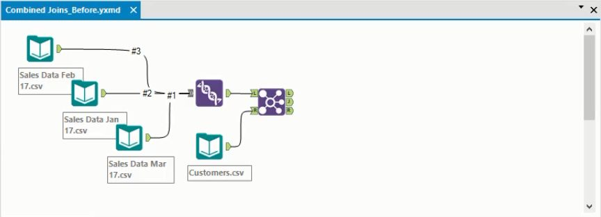
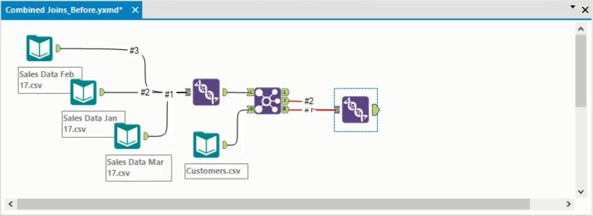
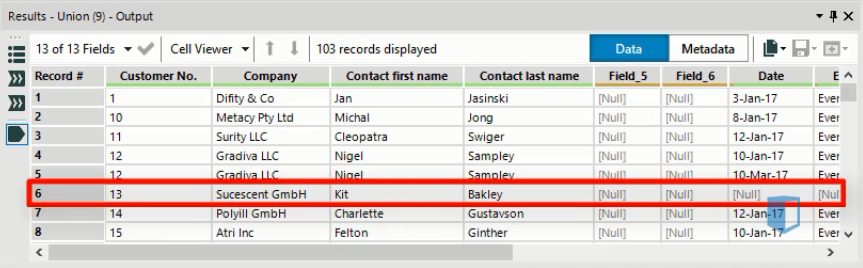
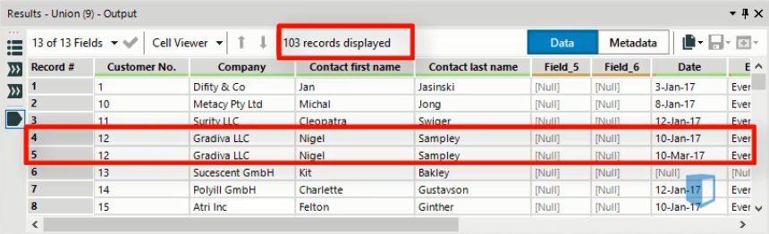
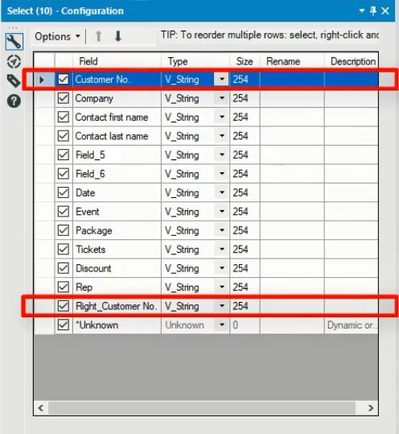

In a previous post, we saw how the Join tool in Alteryx merges two tables into one. However, maybe you want to combine all the data from one of the input tables with the data in the inner join. An outer join lets you do this.
Outer join example
In our previous post on the join tool we created the following workflow, joining three sales data sets with a customers data set. In this workflow, customer data will be distributed between the J and the R output nodes. The J node contains customers who appear in both the customers and the sales table, while the R node contains customers who do not appear in the sales table.

Let’s assume we want to combine all information on customers into a single table. We can do this using an Outer Join. In this instance, we’ll want a Right Outer Join, which combines the data from the J and R nodes of the Join tool.
The Right Outer Join is one of three outer join types available in Alteryx:
- The Left Outer Join combines the data from the J output node and the L output node
- The Right Outer Join combines the data from the J output node and the R output node.
- The Full Outer Join combines the data from the L, J and R output nodes.
Creating the outer join
In our example, we want to create a Right Outer Join. We create the join by adding a Union tool as we can see below and connecting the J and R nodes to it as inputs.
Note: If you’re not familiar with the Union tool, you can read more about it here.

Once the Union tool has been added, running the workflow will create the outer join that we want.
Analyzing the output
We can analyse the results of the Union tool in the Output window. All the customers that appear in both tables are featured in this output. Below we have highlighted a row where the customer has not made a purchase during the period of the sales data. As a result, all the columns from the Sales table have null values for this customer.
This customer would have come from the R node in the Join tool, while the other customers we can see would have passed through the J node.

Below we have highlighted a customer who has made two purchases during the period of the data. As a result, they appear twice in this joined dataset. Because some customers are duplicated like this, there are 103 rows in the output, even though there are only 80 customers in the dataset.

As we can see, the outer join lets us combine the different elements of a previous join together quite easily.
Cleaning the data
When you create joins like this, you can sometimes end up with duplicated fields or fields that don’t have the data type you want.
Below we see the configuration window for the join we created previously. As we have highlighted, the customer number field appears twice. This is because customer numbers appeared in the sales table and the customers table, both of which were merged earlier in the workflow

We could solve this problem by deselecting the checkbox for one of these fields, so it is removed from the final output of the outer join.
You will also see in the window above that all the fields have the same type: V_String. This might not be right in reality, and there may be some fields that should be different types, such as integers. Again, you can easily make these changes in the configuration window.
Conclusion
The Outer Join can be used to combine two or more of the outputs from another join. In this way you can use it to combine joins to achieve more refined data connections. Using the outer join also lets you identify all the data from one of the tables used in a join, without considering whether it appears in the other joined table. With the techniques demonstrated in the last few posts, you should be able to combine data sources in Alteryx in several useful ways.